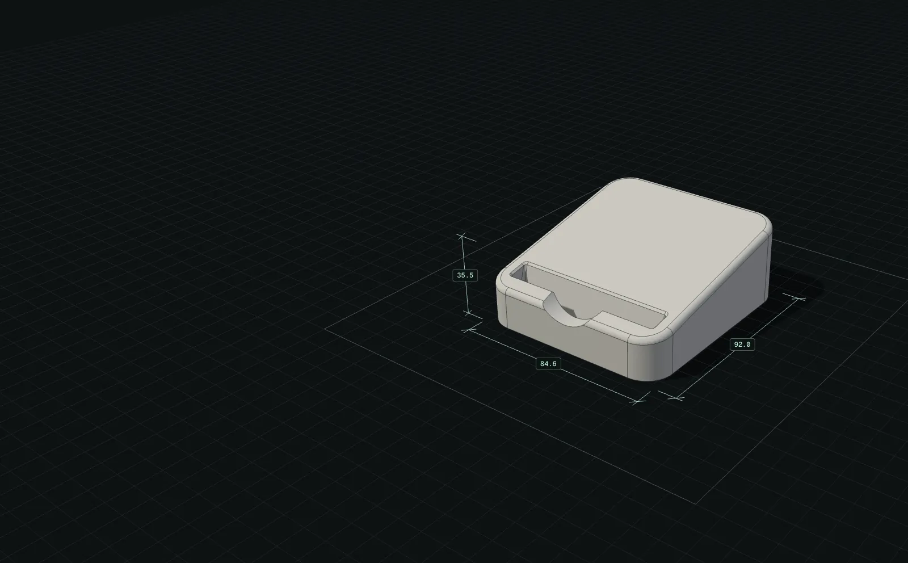
Describe a part. Watch it get built in real CAD.
FORM is an open-source desktop app. An AI agent writes your part as CAD code, a real kernel builds the solid, your own slicer slices it, and every number says how it is known.
macOS, Windows and Linux. MIT licence. Runs on your computer; it never uploads a design or starts a print.
From a sentence to a file you can print
Six steps, and each one leaves a record. The strip below is the one that runs along the bottom of the app.
Say what you need, in your own words
Claude sits in the left column and runs on your own Claude Code account. Ask for a new part or a change, and attach a photo or a drawing. Each answer shows its steps, including the ones that failed, with the time, the cost and the model. You pick the model under the message box.
assumed Anything you have not measured is carried as an assumption all the way to release.
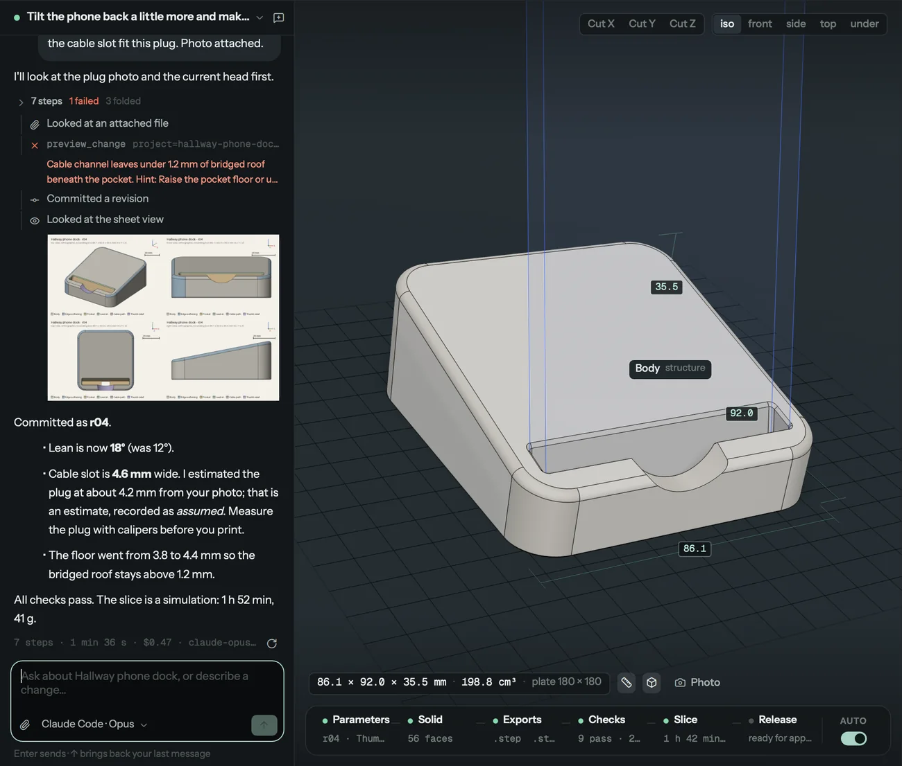
The design is code, with typed parameters
The agent writes a build123d program: parameters with units and ranges, named features, and constraints that explain themselves when a change cannot be built. Every revision keeps its exact code.
specified A design can declare where a default comes from, for example a board's official drawing.
Param("screw_d", "Screw shank diameter", 4.0, 2, 8, 0.05, "mm",
"brief", "screws", "Measure the shank, not the thread tips.")
features = [Feature("plate", "Wall plate", "structure"),
Feature("arm", "Arm", "structure"), ...]
def constraints(self, v):
if g["z2"] + v["screw_head_d"] / 2 + 2 > v["plate_h"]:
return [RecipeError(
"Upper screw sits 75 mm up; the plate is 80 mm tall",
"screws",
"Raise the plate height or reduce the screw spacing.",
["plate_h", "screw_spacing"])]
# from docs/RECIPES.md: the wall hook recipeA real kernel builds a real solid
Every change rebuilds a boundary-representation solid in OpenCascade, in 0.1 to 1.5 seconds depending on the part. You get STEP and STL out, and each face knows which feature made it.
computed Dimensions are read back off the built solid, not copied from the parameters.
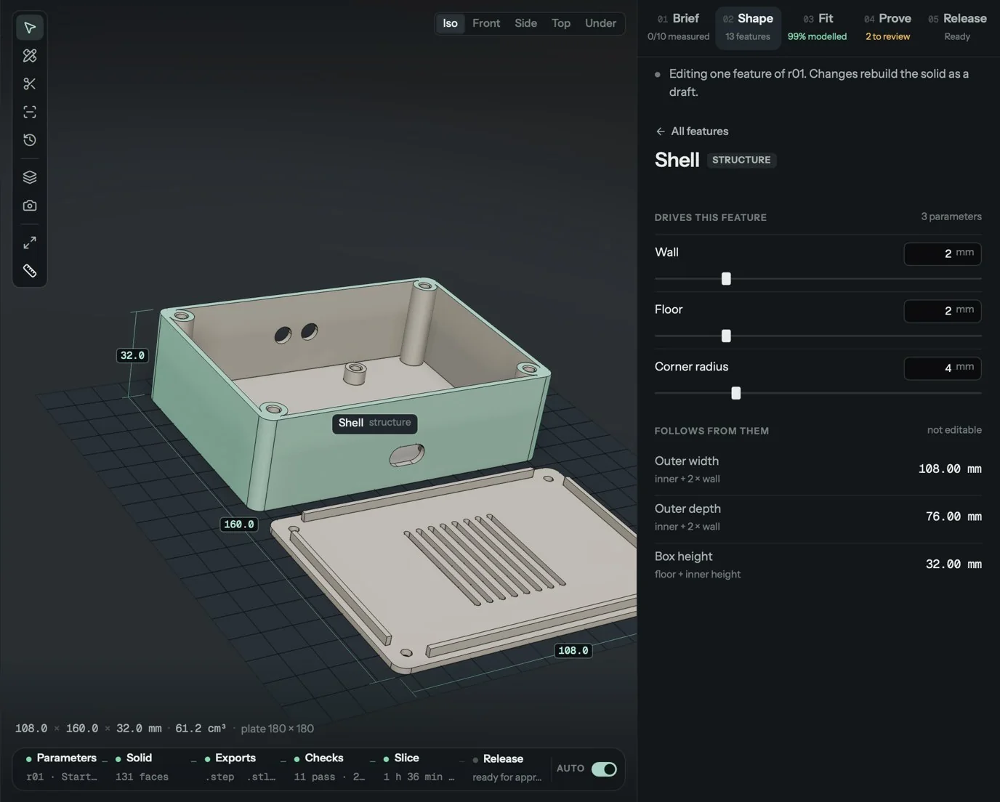
Checks run on the geometry, and say what kind they are
One valid solid, a closed export mesh, the thinnest wall, unsupported overhangs, whether it fits your printer. A rule of thumb is labelled a heuristic. A formula with assumptions is labelled a model.
passheuristic In this run: 9 pass, 2 to review, 0 fail.
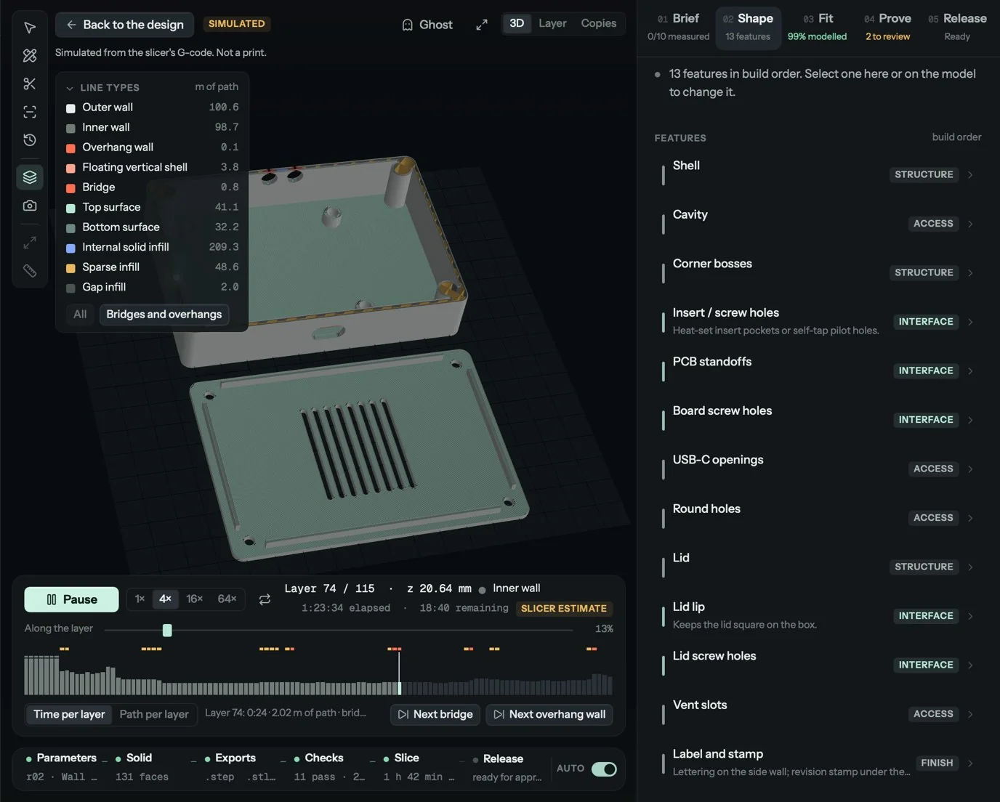
Sliced by the slicer you already use
FORM runs your slicer with your printer, filament and process presets, then reads the toolpaths back so you can step through them layer by layer. Bambu Studio, OrcaSlicer and PrusaSlicer are supported.
simulated A slice is a simulation. FORM never calls it a print.
Only a person can release
A release is a frozen copy of files whose hashes match the revision they claim to be. Change one dimension and the old G-code can no longer be released. Agents can do everything except press the approve button.
not physically validated The release says so until you print it and report what you measured.
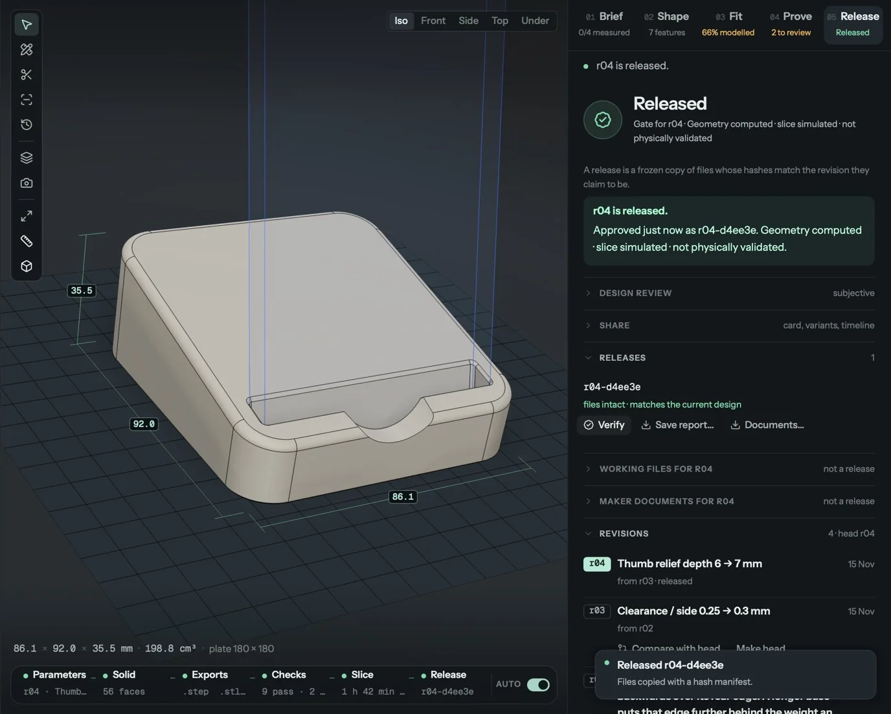
One window: the conversation, the part, the question
A native app drawn on the GPU, in the same process as the CAD engine. No browser and no web view.
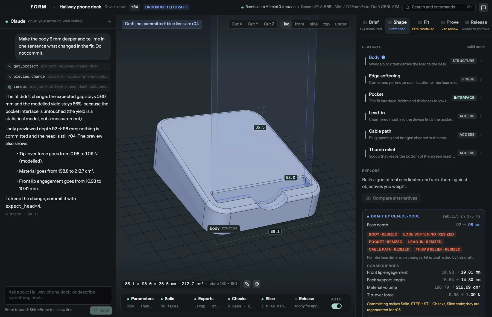
Claude, on the left
Each message runs Claude Code with FORM's tools. The same column shows what any other agent is doing to your designs, live.
The part, in the middle
The kernel's own geometry, one mesh per feature. Click a feature to select it. Overall dimensions are drawn on the plate as dimension lines, and a section cut shows solid cut faces. A draft is drawn in blue until you commit it.
The question, on the right
Five stages: Brief, Shape, Fit, Prove, Release. Each one answers one question about the design.
Will it fit? FORM gives you the odds, and how to improve them.
A pocket that is 0.3 mm too tight is a failed print. FORM models the gap between the printed cavity and the real device from what is known about each.
It then names the cheapest next step: measure the device, print a coupon, or print a small test piece cut from the real geometry. Coupons you print teach it your printer.
- Chance the gap lands in your window66% modelled
- Device width, never measured71.50 ±0.30 mm assumed
- After measuring with calipers98% modelled
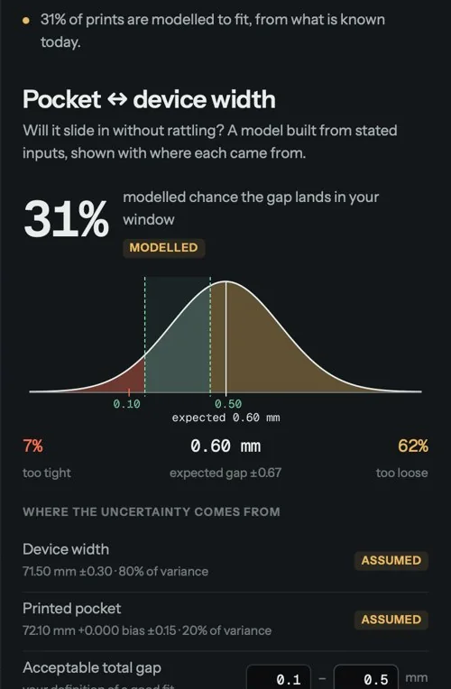
See the print before you print it
The slice comes from your slicer. The checks come from the solid. Neither is a photo of a finished part, and the app says so.
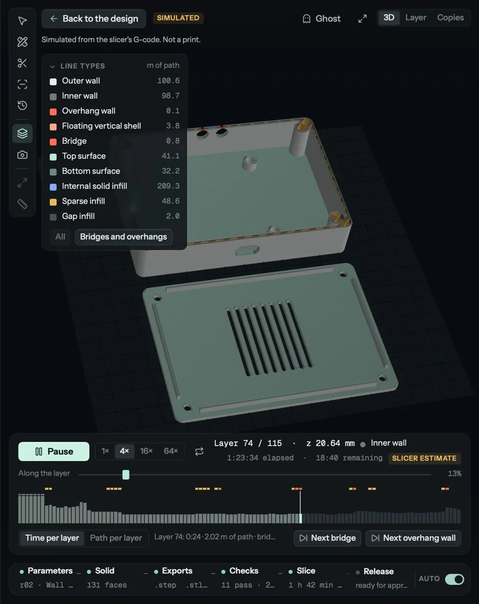
Watch it print
The slicer's own G-code played back in 3D: play, scrub, filter by line type, jump to the next bridge. Time is the slicer's estimate. Simulated, not a print.
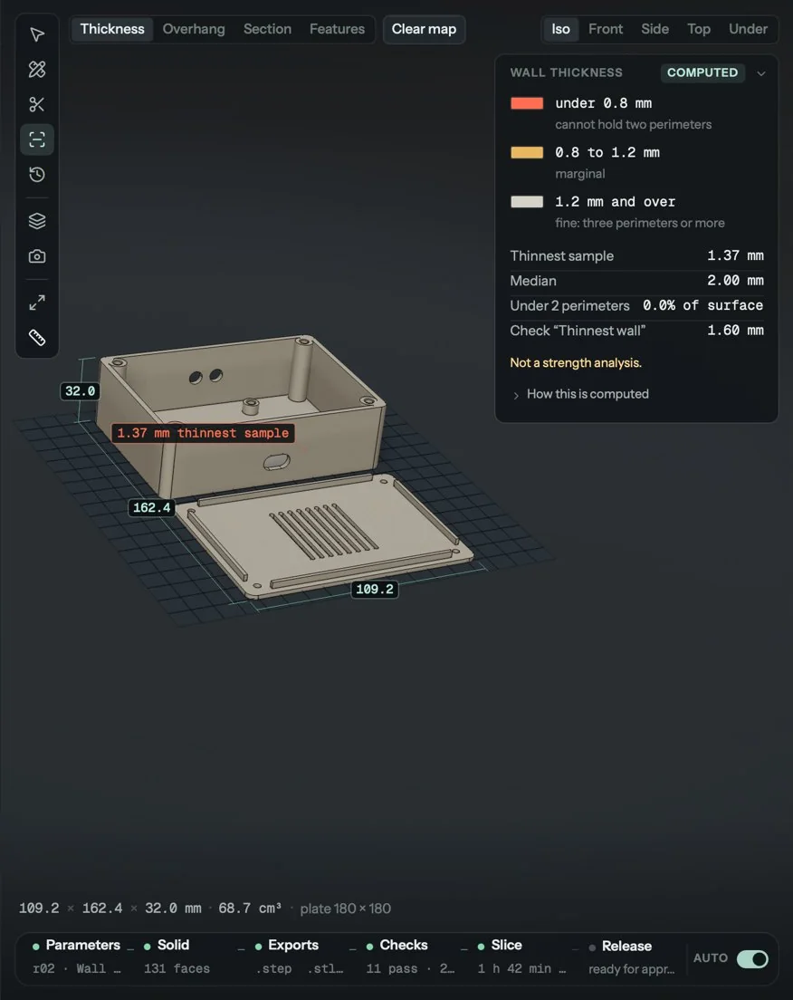
Analysis on the model
Wall thickness, overhang, layer cross-section and small features, computed from the real geometry and drawn on the part. Each legend says what the map does not tell you. None of them is a strength analysis.
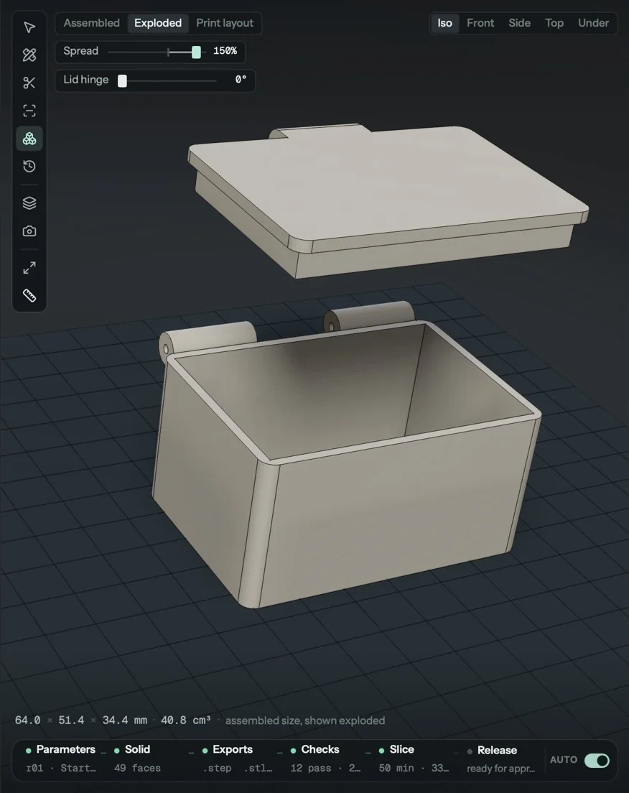
Parts that go together are checked together
See a design assembled, exploded, or laid out for printing. Move a hinge or a slide through its range.
FORM checks overlap, the smallest gap, each joint at sampled positions, and whether a screwdriver can reach. The check text says that sampled motion does not prove the motion is free between samples.
Hardware comes from form.parts: screw clearances to ISO 273, heat-set insert pockets, nut traps, magnet pockets, bearing seats, printable threads and gears, each with its published dimension and source.
It drives the tools you already have
FORM does not replace your slicer or your CAD program. On first launch it shows what it found on your computer and sets up only what you tick.
| Tool | What FORM does with it | Tested how |
|---|---|---|
| build123d / OpenCascade | The CAD kernel: every solid, STEP export and B-rep check. | run for real |
| Bambu Studio | Slices with your printer, filament and process presets. | run for real |
| PrusaSlicer | The same, picked automatically or in the Slicer sheet. | run for real |
| OrcaSlicer | The same. FORM reads the packed presets OrcaSlicer 2.5 ships: 471 of its 496 printers slice. | run for real |
| SuperSlicer, QIDISlicer | The same. | fixtures only |
| OpenSCAD | Designs written in .scad. Customizer ranges become parameters. | run for real |
| Blender | Illustrative renders of the current revision, and its 3D-Print Toolbox checks when the add-on is installed. | renders run |
| FreeCAD | Opens the STEP, an optional re-import check, and a macro with every parameter. | run for real |
| STEP and STL from makers | Imported as reference parts to design around. | run for real |
| Claude Code, Codex also Gemini CLI, Cursor, Claude Desktop | Use FORM's 31 MCP tools. The open app follows along live. | Claude Code, Codex |
“Run for real” means on the release machine, an Apple Silicon Mac. “Fixtures only” means the adapter is tested against recorded files and has not been run against a real installation yet.
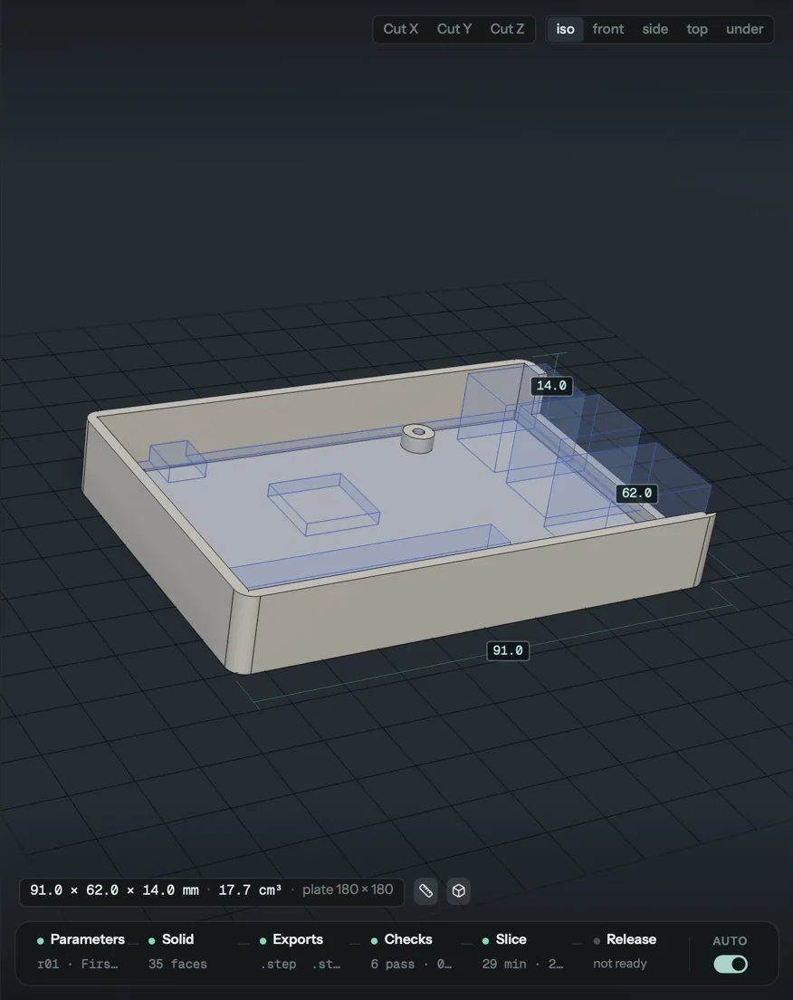
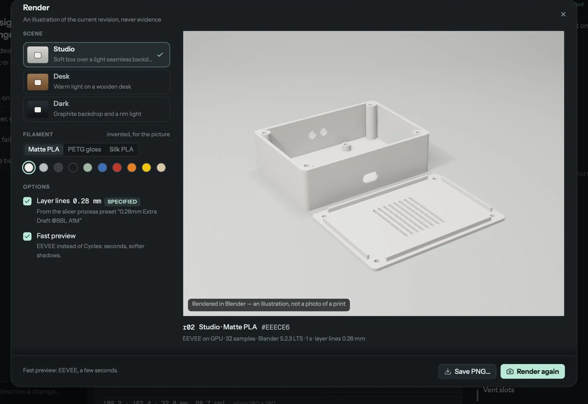
Every number says how it is known
These are numbers from one design in the app, with the tag each one carries. A measured value and a guessed value never look the same.
Local only
FORM listens on loopback. It never uploads a file and never starts a print.
Outputs cannot go stale quietly
Every output is keyed by a hash of its inputs. Change one dimension and the old slice is marked stale.
Not printed by us
Nothing in the repository has been physically printed by the authors as part of verification. The docs list what was tested and what was not.
No window needed
The app, the form command and the MCP server are one engine working on one project folder.
Your coding agent gets 31 MCP tools: design, preview, commit, render, optimise, slice, request a release. Every action is also a form command that prints JSON. If the app is open, it follows along.
- design_guide
- create_design
- preview_change
- commit_change
- render
- optimize
- run_pipeline
- slice_test_piece
- record_physical_result
- request_release
$ form preview hallway-phone-dock depth=98 { "buildable": true, "base_rev": 4, "changes": [ "Base depth: 92 -> 98 mm" ], "derived": [ "Front lip engagement: 10.925 -> 10.81 mm", "Back support length: 15.035 -> 14.8 mm" ], "metrics": [ "Material volume: 198.79 -> 212.69 cm³", "Tip-over force: 0.98 -> 1.09 N" ], "would_invalidate": [ "Solid", "STEP + STL", "Checks", "Slice" ], "revokes_current_approval": false } # real output, shortened: the list of resized features is left out $ form commit hallway-phone-dock depth=98 --expect-head 4 $ form run hallway-phone-dock $ form render hallway-phone-dock --view sheet --out dock.png
> I measured my phone with calipers: 75.6 mm wide, 8.4 mm thick with the case. Make me a desk dock and tell me if it's ready. ● form_overview build123d 0.13.0 / OCP 8.0.1.1 · Bambu Studio 02.09.01.70 · A1 mini ● describe_recipe dock 20 parameters (mm, deg, g) · 6 features · fit: pocket <-> device ● create_project "Desk phone dock" ● preview_change device_width=75.6 device_thickness=8.4 Pocket resized · Solid, STEP+STL, Checks, Slice would go stale ● commit_change expect_head=1 provenance=measured (calipers) r02 · solid 0.33 s · exports · checks · slice done ● render view=sheet [image: four views, coloured by feature] ● request_release ready · acknowledge: tip-over resistance 0.75 N (model) Nearly ready. Pocket 76.1 x 8.9 mm, 0.25 mm per side. Slice: 94 min, 57.6 g, no supports (simulated, not a print). Tip-over uses a default phone height and mass. Tell me yours. I can't approve it. Review it on the bench. # a real Claude Code session, trimmed: 8 turns, 36 seconds, $0.23
Get FORM
The bundles are not signed or notarized yet, so your system will ask before the first launch. Each bundle is about 800 MB unpacked, because it carries the CAD kernel and Qt.
Downloads are on the GitHub releases page. Builds of every push
The app was built, packaged and used by hand on an Apple Silicon Mac. Every build also launches the Windows, Linux and macOS bundles and requires the interface to load and the CAD kernel to start. On Windows and Linux the test suite also uses the app the way a person does: the real window, mouse and keys, a real PrusaSlicer, from first start to a released design. Nobody has used the Windows, Linux or Intel macOS app by hand yet. Please report what you find.
With uv, from a terminal
Installs FORM with its own Python 3.12, including the desktop app. Your system Python is not touched.
$ uv tool install --force --python 3.12 "form-studio[all] @ git+https://github.com/kaizensx/form-studio"$ form appAs a Claude Code plugin
13 skills that carry the design and print-engineering practice, plus the MCP server. FORM itself must be installed first.
> /plugin marketplace add kaizensx/form-studio> /plugin install form@form-studioOpen source, and meant to stay honest
- You describe a physical part, and an AI agent designs it with a real CAD kernel while you watch.
- FORM checks the part, slices it with your real slicer, and tells you honestly what is known.
- Nothing is faked, nothing prints or uploads by itself, and only a person approves a release.